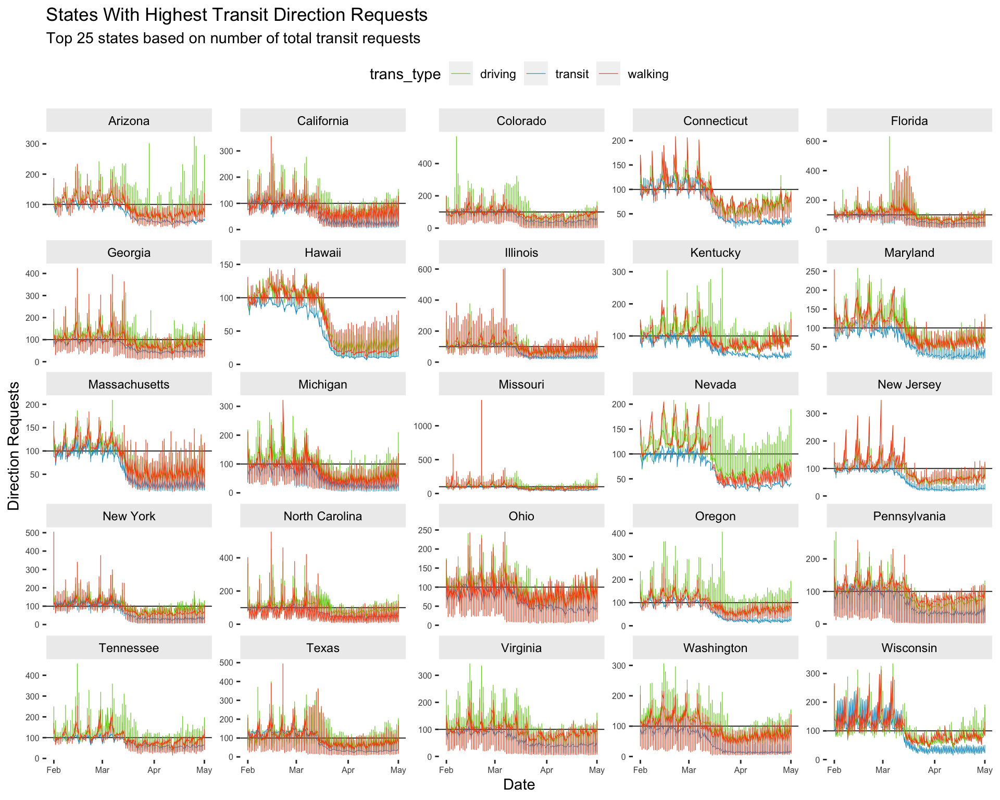

Introduction to Data Visualization with ggplot2 (part 4)
1 Outline
- Import Apple Mobility Data
- Wrangle Apple Mobility Data
- Counting things
- Histograms
- Density plots
- Ridgeline plots
- Violin plots
2 Import TidyApple data
We’re going to import the data from the previous exercises.
TidyApple <- readr::read_csv("https://bit.ly/3deFcBy")
TopUSCities <- readr::read_csv("https://bit.ly/3dYbVub")3 Advanced Facets
In the previous lesson, we introduced the facet_wrap() function for viewing the relationship between two variables across the levels of a categorical variable. In the next section, we’re going to show how faceting can be used to explore ‘small multiples’ in a dataset with variation across multiple levels.
3.1 facet_wrap()
Now that we have a graph we can use to compare the 8 cities, we will use facet_wrap to create a subplot for each level of region.
3.1.1 exercise
Fill in the facet_wrap() (note the use of the ~) function with region and set the ncol to 2.
TopUSCities %>%
ggplot(aes(x = date, y = dir_request,
group = trans_type,
color = trans_type)) +
geom_line(size = 0.1) +
geom_hline(yintercept = 100, size = 0.2, color = "gray20") +
facet_wrap(~ _______, ncol = _) +
lab_top_cities3.1.2 solution
See below:
lab_top_cities <- labs(x = "Date", y = "Direction Requests",
title = "Trends of Relative Activity in Selected US Cities",
subtitle = "NY, LA, CH, HOU, PHA, PHL, SATX, SD",
color = "Type")TopUSCities %>%
ggplot(aes(x = date, y = dir_request,
group = trans_type,
color = trans_type)) +
geom_line(size = 0.1) +
geom_hline(yintercept = 100, size = 0.2, color = "gray20") +
facet_wrap(~ region, ncol = 2) +
lab_top_cities
3.1.3 exercise
Now map both region and trans_type to facet_wrap() and set the ncol to 6.
TopUSCities %>%
ggplot(aes(x = date, y = dir_request,
group = region,
color = trans_type)) +
geom_line(size = 0.1) +
geom_hline(yintercept = 100, size = 0.2, color = "gray20") +
facet_wrap(_______ ~ _______, ncol = _) +
lab_top_cities3.1.4 solution
See below:
TopUSCities %>%
ggplot(aes(x = date, y = dir_request,
group = region,
color = trans_type)) +
geom_line(size = 0.1) +
geom_hline(yintercept = 100, size = 0.2, color = "gray20") +
facet_wrap(region ~ trans_type, ncol = 6) +
lab_top_cities
3.2 Complete Themes
ggplot2 comes with a few default theme settings. Read more about them here. These themes come with arguments to adjust the font_size and font_family on our plot.
theme_minimal(
base_size = 11,
base_family = "",
base_line_size = base_size/22,
base_rect_size = base_size/22
)3.2.1 exercise
We’ll use the theme_minimal() function to reduce the number of elements on our graph (don’t add any arguments).
TopUSCities %>%
ggplot(aes(x = date, y = dir_request,
group = region,
color = trans_type)) +
geom_line(size = 0.1) +
geom_hline(yintercept = 100, size = 0.2, color = "gray20") +
facet_wrap(region ~ trans_type, ncol = 6) +
______________() +
lab_top_cities3.2.2 solution
See below:
TopUSCities %>%
ggplot(aes(x = date, y = dir_request,
group = region,
color = trans_type)) +
geom_line(size = 0.1) +
geom_hline(yintercept = 100, size = 0.2, color = "gray20") +
facet_wrap(region ~ trans_type, ncol = 6) +
theme_minimal() +
lab_top_cities
3.3 Theme elements
Themes (accessible with the theme function) give up the ability to customize various element_() settings, which affect the ‘look’ of our graph.
3.3.1 exercise
We will start by moving the legend.position to "top" so it’s not crowding the x axis on our graph.
TopUSCities %>%
ggplot(aes(x = date, y = dir_request,
group = region,
color = trans_type)) +
geom_line(size = 0.1) +
geom_hline(yintercept = 100, size = 0.2, color = "gray20") +
facet_wrap(region ~ trans_type, ncol = 6) +
theme_minimal() +
theme(___________ = _____) +
lab_top_cities3.3.2 solution
See below:
TopUSCities %>%
ggplot(aes(x = date, y = dir_request,
group = region,
color = trans_type)) +
geom_line(size = 0.1) +
geom_hline(yintercept = 100, size = 0.2, color = "gray20") +
facet_wrap(region ~ trans_type, ncol = 6) +
theme_minimal() +
theme(legend.position = "top") +
lab_top_cities
Notice we pass the theme() layer after the theme_minimal() layer (if we ordered these the other way around, theme_minimal() would overwrite any custom settings we made in theme()).
3.4 Small Multiples
What if we wanted to facet more than 8 cities? Fortunately, we have a the ggforce and geofacet packages for doing just that!
library(sf)
library(geofacet)
library(ggforce)
library(jcolors)Building the Graph Data
We will start by filtering the
TidyAppleto only the 50 US states (we’ve removed three US territories) and storing these data inTidyAppleUS.Next we limit the date range to the beginning of the shelter in place (from February 1, 2020 to May 1, 2020). These data get stored in
TidyAppleUST1.We then create a dataset with only
"transit"direction requests, and we count these by state (sub_region), arrange the data descending withsort = TRUE, and take the top 25 rows (Top25TransitStates).
Finally, we filter TidyAppleUST1 using the 25 states in Top25TransitStates to create our graphing dataset, Top25TransitUSAllT1.
# create only US states (TidyAppleUS)
TidyApple %>%
filter(country == "United States" &
!sub_region %in% c("Guam", "Puerto Rico",
"Virgin Islands")) -> TidyAppleUS
# create shelter in place time 1 (TidyAppleUST1)
TidyAppleUS %>%
filter(date >= as_date("2020-02-01") &
date <= as_date("2020-05-01")) -> TidyAppleUST1
# create top 25 states (Top25TransitStates)
Top25TransitStates <- TidyAppleUST1 %>%
filter(trans_type == "transit") %>%
count(sub_region, trans_type, sort = TRUE) %>%
head(25)
# filter T1 to states with the most transit requests (Top25TransitUSAllT1)
TidyAppleUST1 %>%
filter(sub_region %in%
unique(Top25TransitStates$sub_region)) -> Top25TransitUSAllT1
Top25TransitUSAllT1 %>% skimr::skim()| Name | Piped data |
| Number of rows | 188643 |
| Number of columns | 7 |
| _______________________ | |
| Column type frequency: | |
| character | 5 |
| Date | 1 |
| numeric | 1 |
| ________________________ | |
| Group variables | None |
Variable type: character
| skim_variable | n_missing | complete_rate | min | max | empty | n_unique | whitespace |
|---|---|---|---|---|---|---|---|
| geo_type | 0 | 1 | 4 | 6 | 0 | 2 | 0 |
| region | 0 | 1 | 5 | 39 | 0 | 1058 | 0 |
| trans_type | 0 | 1 | 7 | 7 | 0 | 3 | 0 |
| sub_region | 0 | 1 | 4 | 14 | 0 | 25 | 0 |
| country | 0 | 1 | 13 | 13 | 0 | 1 | 0 |
Variable type: Date
| skim_variable | n_missing | complete_rate | min | max | median | n_unique |
|---|---|---|---|---|---|---|
| date | 0 | 1 | 2020-02-01 | 2020-05-01 | 2020-03-17 | 91 |
Variable type: numeric
| skim_variable | n_missing | complete_rate | mean | sd | p0 | p25 | p50 | p75 | p100 | hist |
|---|---|---|---|---|---|---|---|---|---|---|
| dir_request | 0 | 1 | 92.68 | 36.02 | 0.44 | 68.64 | 93.6 | 113.14 | 1379.02 | ▇▁▁▁▁ |
3.4.1 exercise
set
titleto"States With Highest Transit Direction Requests"set
subtitleto"Top 25 states based on number of total transit requests"
lab_facet_wrap_paginate <- labs(
x = "Date", y = "Direction Requests",
title = _____________________________________,
subtitle = _____________________________________)3.4.2 solution
lab_facet_wrap_paginate <- labs(
x = "Date", y = "Direction Requests",
title = "States With Highest Transit Direction Requests",
subtitle = "Top 25 states based on number of total transit requests")3.4.3 exercise
Inside ggforce::facet_wrap_paginate():
map
sub_regionas the variable to facet using the~map
5toncolmap
"free_y"toscales
Inside theme()
map
element_blank()topanel.borderandpanel.backgroundmap
element_text(size = 6)toaxis.text.xandaxis.text.ymap
element_text(colour = 'black')tostrip.textmap
element_rect(fill = "gray93")tostrip.backgroundmap
"top"tolegend.position
Top25TransitUSAllT1 %>%
# global settings
ggplot(aes(x = date, y = dir_request,
group = trans_type,
color = trans_type)) +
# lines
geom_hline(yintercept = 100, size = 0.3, color = "black") +
geom_line(size = 0.2) +
# faceting
ggforce::facet_wrap_paginate(~ __________,
ncol = _,
scales = _______) +
# theme settings
theme(__________ = __________(),
__________ = __________(),
__________ = __________(size = _),
__________ = __________(size = _),
__________ = __________(colour = __________),
__________ = __________(fill = __________),
__________ = __________) +
# labels
lab_facet_wrap_paginate3.4.4 solution
See below:
Top25TransitUSAllT1 %>%
# global settings
ggplot(aes(x = date, y = dir_request,
group = trans_type,
color = trans_type)) +
# lines
geom_hline(yintercept = 100, size = 0.3, color = "black") +
geom_line(size = 0.2) +
# faceting
ggforce::facet_wrap_paginate(~ sub_region,
ncol = 5,
scales = "free_y") +
# theme settings
theme(panel.border = element_blank(),
panel.background = element_blank(),
axis.text.x = element_text(size = 6),
axis.text.y = element_text(size = 6),
strip.text = element_text(colour = 'black'),
strip.background = element_rect(fill = "gray93"),
legend.position = "top") +
# labels
lab_facet_wrap_paginate
3.5 Adjusting Colors
Changing the colors on graphs gives us the ability to further customize their look. We can set these manually, or use one of the many complete color palettes from a user-written package. Below we’ll use the jcolors package to highlight the transit direction requests from the previous graph.
3.5.1 exercise
- add
scale_color_jcolors()and play with thepaletteargument to make the graph look like thesolution.
Top25TransitUSAllT1 %>%
# global settings
ggplot(aes(x = date, y = dir_request,
group = trans_type,
color = trans_type)) +
# lines
geom_hline(yintercept = 100, size = 0.3, color = "black") +
geom_line(size = 0.2) +
# faceting
ggforce::facet_wrap_paginate(~ sub_region,
ncol = 5,
scales = "free_y") +
# theme settings
theme(panel.border = element_blank(),
panel.background = element_blank(),
axis.text.x = element_text(size = 6),
axis.text.y = element_text(size = 6),
strip.text = element_text(colour = 'black'),
strip.background = element_rect(fill = "gray93"),
legend.position = "top") +
# adjust colors
__________________________(palette = ____) +
lab_facet_wrap_paginate3.5.2 solution
See below:
Top25TransitUSAllT1 %>%
# global settings
ggplot(aes(x = date, y = dir_request,
group = trans_type,
color = trans_type)) +
# lines
geom_hline(yintercept = 100, size = 0.3, color = "black") +
geom_line(size = 0.2) +
# faceting
ggforce::facet_wrap_paginate(~ sub_region,
ncol = 5,
scales = "free_y") +
# theme settings
theme(panel.border = element_blank(),
panel.background = element_blank(),
axis.text.x = element_text(size = 6),
axis.text.y = element_text(size = 6),
strip.text = element_text(colour = 'black'),
strip.background = element_rect(fill = "gray93"),
legend.position = "top") +
scale_color_jcolors(palette = "pal3") +
lab_facet_wrap_paginate
3.6 Extra: geofacet
We’re now going to look at all 50 states using the facet_geo() function from the geofacet package. To make this graph easier to interpret, we’re going to focus only on walking mobility data, and adjust the dir_request value to absolute change from baseline (set to 100 on 2020-01-13).
3.6.1 Adjusted Walking Data
Create the USWalkingAdj data by filtering the trans_type to "walking" and creating two new variables: above_below (a logical indicator for values being above or below the baseline value of 100), and dir_request_adj (the adjusted direction request value).
3.6.2 exercise
Fill in the correct variables in the wrangling steps below:
USWalkingAdj <- TidyAppleUS %>%
filter(trans_type == _________) %>%
mutate(above_below = _________ < 100,
dir_request_adj = _________ - 100)
USWalkingAdj %>%
skimr::skim()3.6.3 solution
See below:
USWalkingAdj <- TidyAppleUS %>%
filter(trans_type == "walking") %>%
mutate(above_below = dir_request < 100,
dir_request_adj = dir_request - 100)
USWalkingAdj %>%
skimr::skim()| Name | Piped data |
| Number of rows | 160085 |
| Number of columns | 9 |
| _______________________ | |
| Column type frequency: | |
| character | 5 |
| Date | 1 |
| logical | 1 |
| numeric | 2 |
| ________________________ | |
| Group variables | None |
Variable type: character
| skim_variable | n_missing | complete_rate | min | max | empty | n_unique | whitespace |
|---|---|---|---|---|---|---|---|
| geo_type | 0 | 1 | 4 | 6 | 0 | 2 | 0 |
| region | 0 | 1 | 5 | 39 | 0 | 452 | 0 |
| trans_type | 0 | 1 | 7 | 7 | 0 | 1 | 0 |
| sub_region | 0 | 1 | 4 | 14 | 0 | 48 | 0 |
| country | 0 | 1 | 13 | 13 | 0 | 1 | 0 |
Variable type: Date
| skim_variable | n_missing | complete_rate | min | max | median | n_unique |
|---|---|---|---|---|---|---|
| date | 0 | 1 | 2020-01-13 | 2020-11-24 | 2020-06-19 | 317 |
Variable type: logical
| skim_variable | n_missing | complete_rate | mean | count |
|---|---|---|---|---|
| above_below | 220 | 1 | 0.32 | FAL: 108071, TRU: 51794 |
Variable type: numeric
| skim_variable | n_missing | complete_rate | mean | sd | p0 | p25 | p50 | p75 | p100 | hist |
|---|---|---|---|---|---|---|---|---|---|---|
| dir_request | 220 | 1 | 129.36 | 63.68 | 0.44 | 89.44 | 122.7 | 163.82 | 1379.02 | ▇▁▁▁▁ |
| dir_request_adj | 220 | 1 | 29.36 | 63.68 | -99.56 | -10.56 | 22.7 | 63.82 | 1279.02 | ▇▁▁▁▁ |
3.6.4 exercise
Assign the following to the labels:
set
"US Trends in Mobility Data for Walking (Adjusted)"totitleset
"https://covid19.apple.com/mobility"tocaption
lab_facet_geo <- labs(x = "Date",
y = "Direction Requests (Walking)",
title = ____________________________________________,
subtitle = paste0("Original data uses 100 as baseline for usage at ",
min(USWalkingAdj$date)),
caption = ____________________________________________,
fill = "Below Baseline")3.6.5 solution
See below:
lab_facet_geo <- labs(x = "Date",
y = "Direction Requests (Walking)",
title = "US Trends in Mobility Data for Walking (Adjusted)",
subtitle = paste0("Original data uses 100 as baseline for usage at ",
min(USWalkingAdj$date)),
caption = "https://covid19.apple.com/mobility",
fill = "Below Baseline")3.6.6 exercise
set the colors in
color_bl_orasc("#8470FF", "#7FFFD4")set
yinterceptto0ingeom_hline()set the
valuesinscale_fill_manual()tocolor_bl_ormap
sub_regiontofacet_geousing~
Inside theme()
- set the
panel.borderandpanel.backgroundtoelement_blank() - set the
axis.text.xandaxis.text.ytoelement_text(size = 6) - set the
strip.text.xtoelement_text(size = 7) - set
strip.texttoelement_text(colour = 'white') - set
strip.backgroundtoelement_rect(fill = "black") - set
legend.positionto"bottom"
# set colors
color_bl_or <- c(____________, ____________)
USWalkingAdj %>%
ggplot(aes(x = date, y = dir_request_adj,
group = sub_region, fill = above_below)) +
geom_col() +
geom_hline(yintercept = _, color = "gray7") +
scale_fill_manual(values = ____________) +
facet_geo(~ sub_region) +
theme_bw() +
theme(______________ = ______________(),
______________ = ______________(),
______________ = ______________(size = _),
______________ = ______________(size = _),
______________ = ______________(size = _),
______________ = ______________(colour = ______________),
______________ = ______________(fill = ______________),
______________ = ______________) +
lab_facet_geo3.6.7 solution
See below:
# set colors
color_bl_or <- c("#8470FF", "#7FFFD4")
USWalkingAdj %>%
ggplot(aes(x = date, y = dir_request_adj,
group = sub_region, fill = above_below)) +
geom_col() +
geom_hline(yintercept = 0,
color = "gray7") +
scale_fill_manual(values = color_bl_or) +
facet_geo(~ sub_region) +
theme_bw() +
theme(panel.border = element_blank(),
panel.background = element_blank(),
axis.text.x = element_text(size = 6),
axis.text.y = element_text(size = 6),
strip.text.x = element_text(size = 7),
strip.text = element_text(colour = 'white'),
strip.background = element_rect(fill = "black"),
legend.position = "bottom") +
lab_facet_geo
4 Wrap Up
Original Question: How has COVID changed our modes of transportation?
Which graphs do you feel are best at answering this question? Why?
What other information (tables, annotations, etc.) would you include with the graphs?